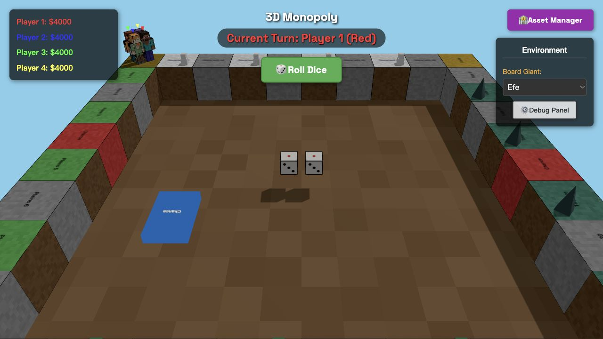

New player?
If the strategy layer still feels abstract, go back through the basic rules and tile flow first.
Open how to playGood matches are not decided by luck alone. In Craft Monopoly, strong players protect their cash, target valuable color groups early, and know when to stop spending so they can survive the next rent hit.

New players often spend too much on early purchases, leaving themselves open to taxes, rent, and a missed turn at Nightfall. Cash is not dead weight: it keeps you alive long enough for good properties to pay off.
A scattered portfolio can feel strong, but controlling at least two of a biome’s three plots is where the rent pressure starts. Once that majority is dangerous, everyone else has to plan around your economy.
If you are playing solo or testing openings, AI players are useful for learning how fast the board changes and which property zones generate the most swing.
Mid game is where many tables are actually decided. Players who only think about the next tile often lose to players who think in rent cycles. Ask yourself which parts of the board are becoming expensive, who is strongest after the next loop, and whether your current spending plan still makes sense.
Use the board positions and current cash—not just the property price—to judge a purchase. A plot can complete a biome majority, deny one to a rival, or leave you short before an expensive tax tile. Recheck your plan after every event card.
Upgrades increase rent, but each one costs nearly half the plot’s purchase price. Before you build, keep enough cash for likely rent, Creeper Tax, and the current World Storm upkeep.
Overspending early and leaving no buffer for rent, taxes, or World Storm upkeep is a common way to lose momentum.
No. Good players balance expansion with survival and think about color-set potential, not just raw ownership count.
Yes. AI tables are a good way to test openings, risk tolerance, and mid-game cash discipline.
Start a smaller match, try one focused plan, and pay attention to how your cash, monopolies, and rent pressure evolve over a full loop.